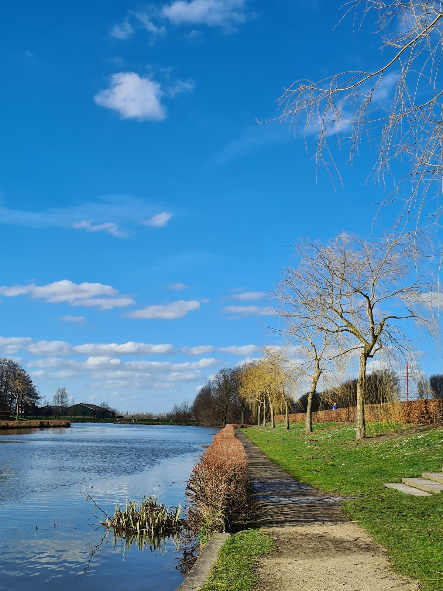
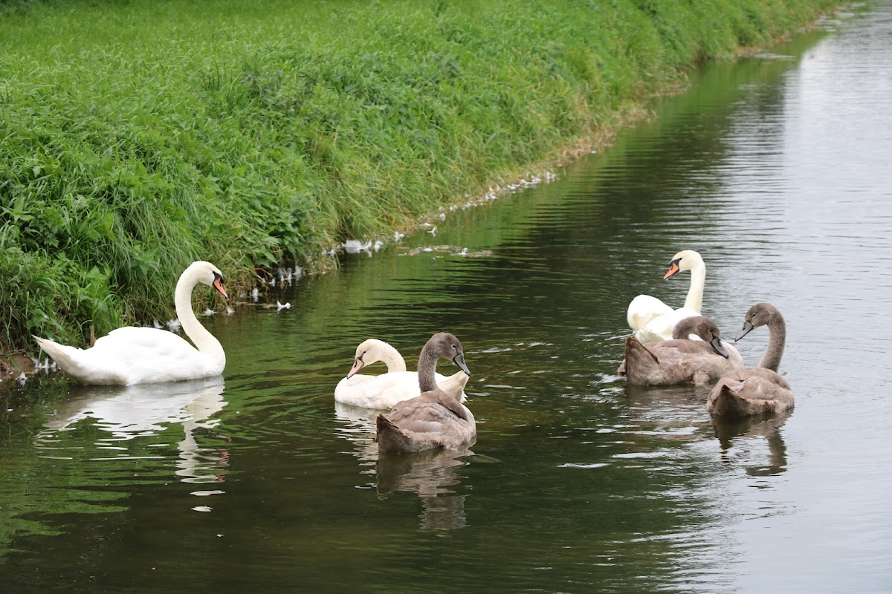
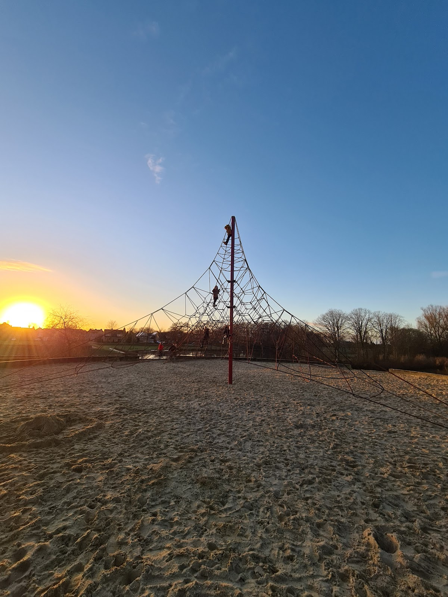
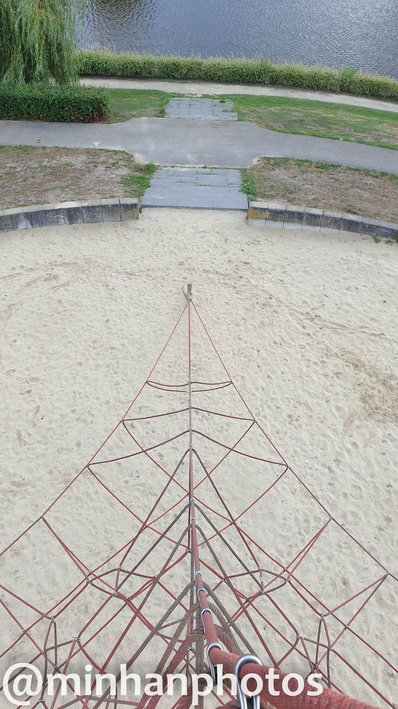
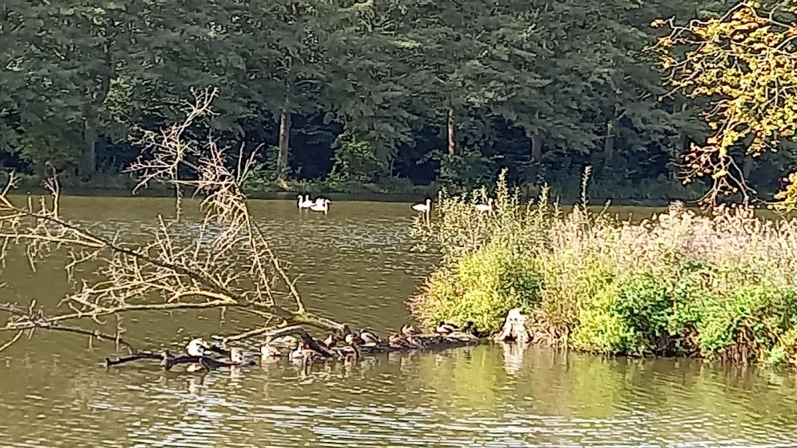
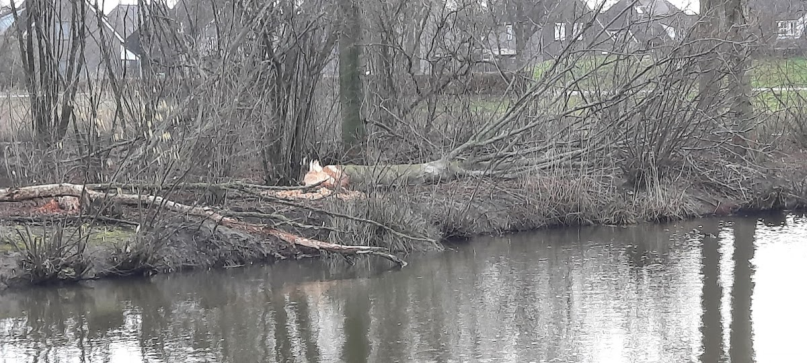
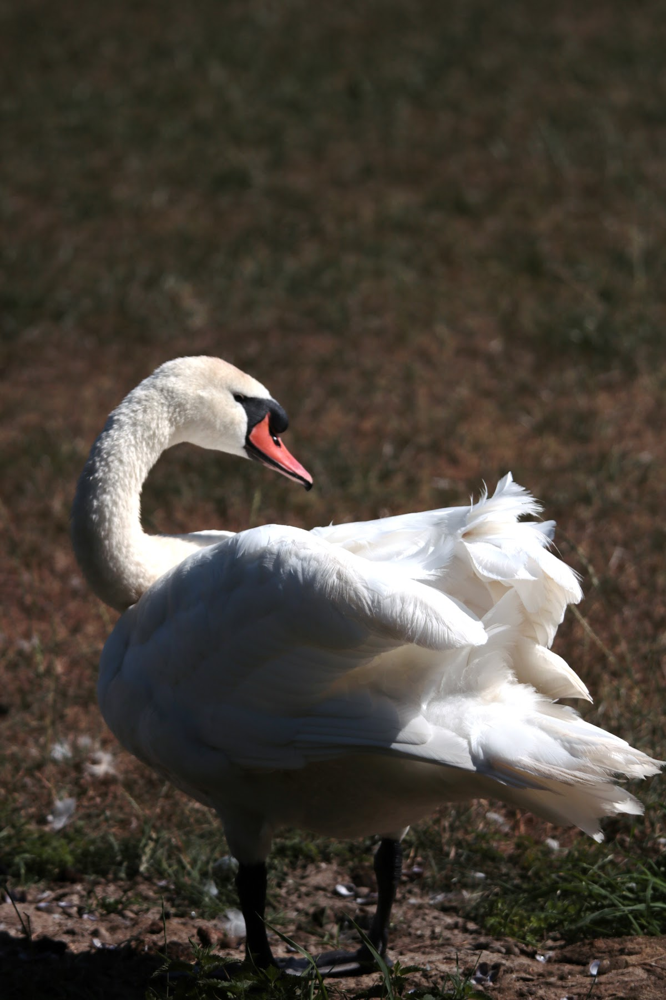

Stadspark met vijver, wandelpaden, watervogels en speeltuin De Klimspin. Een heerlijke plek om tot rust te komen in Oss.
Mikkeldonk Park is een geweldig park om te wandelen in Oss. De grootste route duurt ongeveer 40 minuten. Er is veel te zien: watervogels, een mooie vijver en prachtige natuur.
Het park is een heerlijke plek om wakker te worden in de ochtend, om te wandelen met de hond, of gewoon om te genieten van de rust. Het Mikkeldonk Park ligt aan de Wetering in Oss.



De Klimspin is een solide speeltoestel midden in het Mikkeldonk Park. Het is ontworpen om kinderen een uitdagende klimervaring te bieden. Helemaal bovenin klimmen is een avontuur!
Het speeltoestel ligt aan de Inlaat 4 in Oss, direct in het park. Vrij toegankelijk en geschikt voor kinderen die van klimmen houden.
Bekijk op Google MapsFoto's van bezoekers via Google Maps



"Prachtig park om te wandelen."
— Mario Petit
"Het is een heerlijke plek, om wakker te worden in de ochtend. Het is mooi om te wandelen."
— Denise Jansen
"Fijn park om met de hond te wandelen. Veel watervogels."
— Marion Awater
"Geweldig park om te wandelen, grootste route ongeveer 40 minuten, veel te zien"
— Rianne van Teeffelen
"Echt leuk. Helemaal bovenin geweest." (De Klimspin)
— Rutger Huisman
Wetering 47, 5345 RH Oss
Inlaat 4, 5345 GL Oss
24 uur geopend, 7 dagen per week
Gratis — vrij toegankelijk